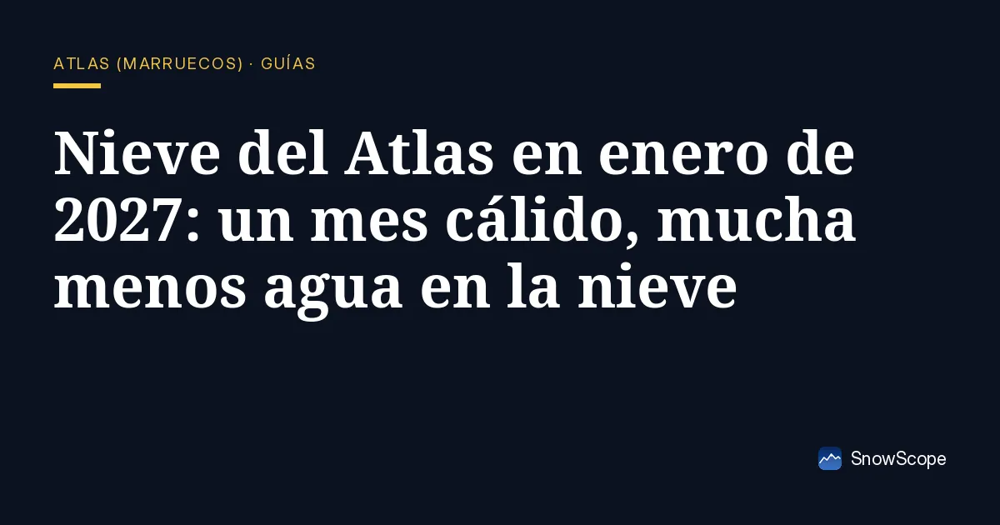
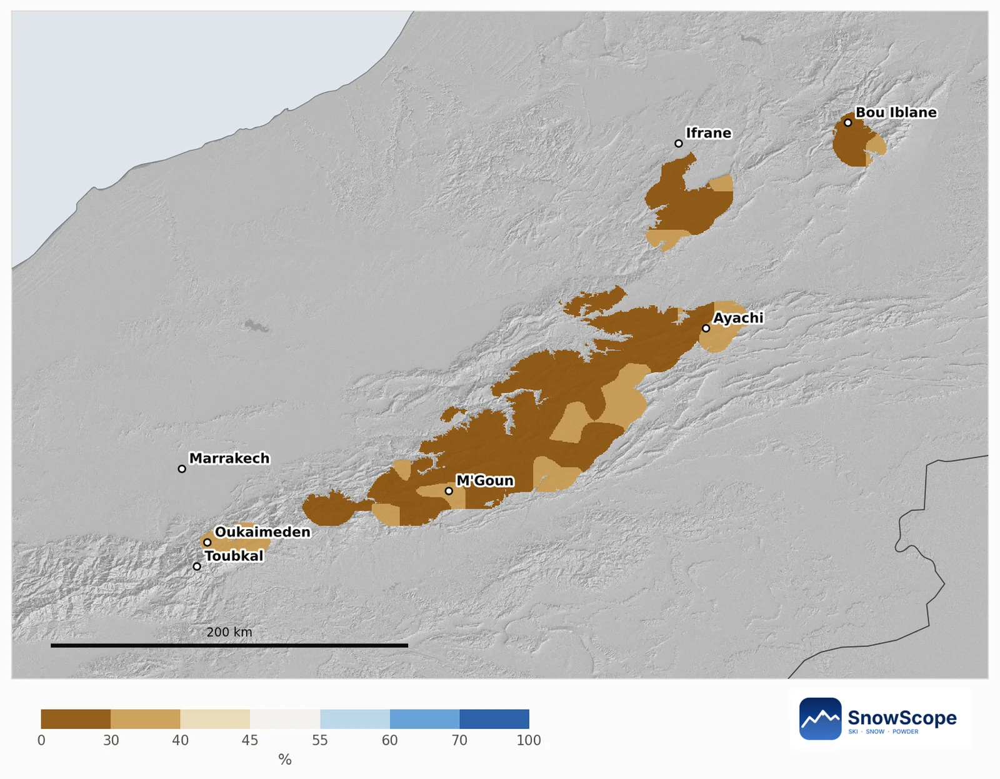
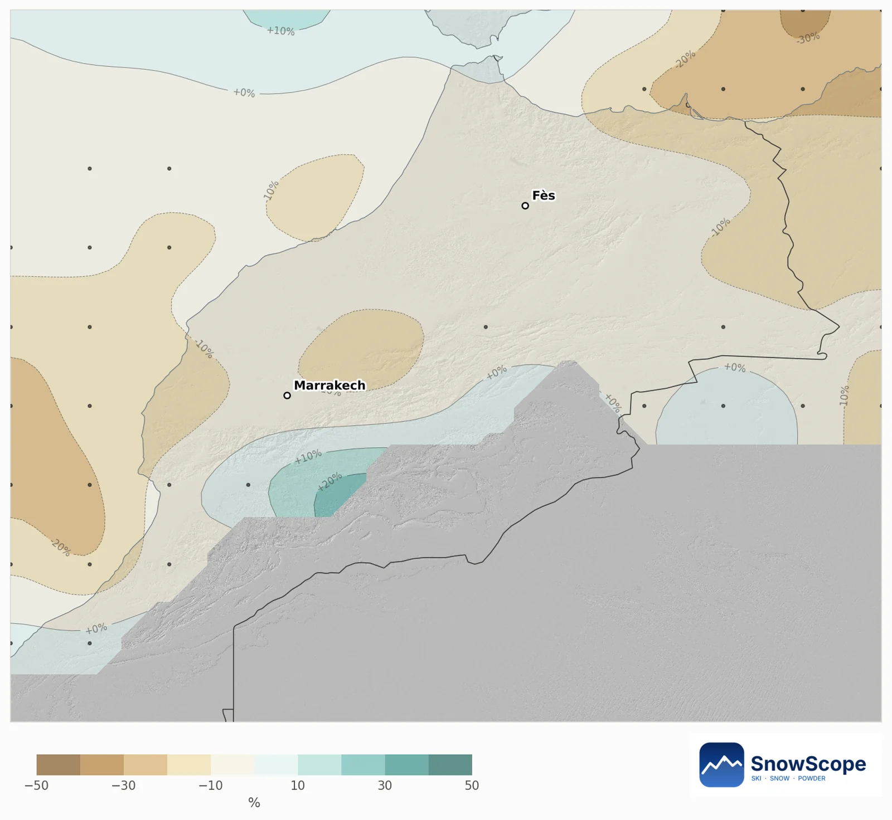

Nieve del Atlas en enero de 2027: un mes cálido, mucha menos agua en la nieve
Un enero cálido se acerca a las montañas de Marruecos. El pronóstico estacional apunta a temperaturas 2 °C por encima de lo normal y precipitaciones cercanas a lo habitual, lo que favorece la lluvia sobre la nieve en las laderas medias. Con 45 inviernos anteriores para sacar conclusiones, el pronóstico es aproximadamente una tercera parte del agua de nieve típica de un enero: unos 69 millones de m³ en lugar de 206.
Consulta la previsión de nieve en tiempo real de Atlas en la app SnowScopeEspesor de nieve, alertas de nieve polvo y mapa 3D, gratis.

Dónde se debilitan las probabilidades de nieve
El mapa de SnowScope divide el Atlas en zonas de unos 10 km y compara cada una con su propio historial de eneros. Todo el terreno elevado que normalmente retiene nieve en este mes ahora se inclina hacia condiciones más secas. La probabilidad de que cualquier zona tenga nieve más profunda de lo habitual oscila entre el 24 % y el 35 %, con un valor típico alrededor del 28 %. Ni una sola zona se inclina hacia un mes más nevado.
El patrón es consistente de oeste a este: Toubkal en el Alto Atlas occidental, M'Goun en el centro, Ayachi en el este y Bou Iblane en el Atlas Medio muestran la misma tendencia.
Temperatura y lluvia: cuándo importa el frío
Las precipitaciones se mantienen cerca del rango habitual, oscilando entre un 5 % por debajo y un 1 % por encima de lo normal según las diferentes zonas.
En el Atlas, unos pocos grados desplazan el límite entre nieve y lluvia. Esta línea se sitúa entre 2000 y 2500 m de altitud. Cuando enero es así de cálido, las tormentas siguen aportando agua, pero en las laderas medias e inferiores llega en forma de lluvia, no de nieve. Solo las crestas más altas y las laderas orientadas al norte por encima de 2500 m retienen la nieve más tiempo.


Qué esperan los macizos altos
En las cimas (por encima de 2500 m, o 2300 m en Bou Iblane), la profundidad media de nieve de enero es normalmente 5 cm en Toubkal, 6 cm en M'Goun, 10 cm cerca de Ayachi y 8 cm en Bou Iblane. Estos son promedios de cuencas: las caras sur soleadas se derriten rápidamente, mientras que las caras norte se mantienen más profundas. El pronóstico reduce estos valores aproximadamente a la mitad: a 3, 3, 5 y 4 cm.
El equivalente de agua de nieve (el agua liberada al derretirse; 1 mm equivale a 1 litro por metro cuadrado) cuenta la historia más seca. Un enero típico retiene 10 mm en Toubkal, 16 mm en M'Goun, 24 mm en Ayachi y 16 mm en Bou Iblane. El pronóstico reduce estos a 7, 7, 12 y 8 mm. La fracción del terreno elevado que retiene nieve cae bruscamente: M'Goun de 69 % a 41 %, Ayachi de 77 % a 60 %.

Agua de montaña para los valles de abajo
La nieve almacena agua para los ríos y embalses que alimentan las tierras bajas en primavera. Sumado en todas las montañas de Marruecos, un enero normal retiene 206 millones de m³ de agua congelada en la capa de nieve. Este pronóstico espera 69 millones de m³, con un rango más probable entre 31 y 235, y solo un 31 % de probabilidad de superar el total habitual.
La cuenca del Oum Er-Rbia, que drena el Alto Atlas central y oriental, normalmente retiene 96 millones de m³ en enero; el pronóstico es 30. El Moulouya (normalmente 36, pronóstico 12), Draa (normalmente 26, pronóstico 11), Sebou (normalmente 15, pronóstico 5) y Tensift (normalmente 14, pronóstico 7) todos se inclinan hacia cantidades menores. Esta nieve de enero se derretirá durante la primavera; a menos que febrero y marzo traigan nieve más abundante, los ríos llevarán menos agua de fusión a los embalses.


Lecciones de inviernos similares
Los eneros anteriores cuyo clima fue más parecido a este pronóstico son 2016, 2024 y 1998. Comparándolos, vemos que nieve más escasa sí ocurre en años cálidos, pero no es seguro: una fuerte tormenta atlántica aún puede dejar nieve en los pasos altos.
Un pronóstico estacional cambia las probabilidades a lo largo del mes, no fija un resultado único. Para decisiones sobre esquí, suministro de agua o viajes por la nieve, consulta el pronóstico de 7 días conforme se desarrolla enero y después de la llegada de tormentas.
Consejos para esquiadores
- Planifica viajes de esquí al Alto Atlas para mediados o finales de enero, después de las tormentas atlánticas, en lugar de al principio del mes.
- Busca las cimas y las laderas orientadas al norte a 2500 m o superior: retienen nieve más tiempo en un mes cálido.
- Consulta el mapa de SnowScope diariamente en enero para seguir la línea de nieve conforme se desplaza después de cada tormenta; evita el terreno sin nieve.
- Para los gestores de agua: un enero escaso significa que la escorrentía de primavera dependerá más del clima de febrero y marzo. Monitoriza la temporada invernal completa, no solo este mes.
- Si el pronóstico de 7 días muestra una ola de frío o una tormenta que se acerca, esa es tu señal para esperar nieve fresca; los periodos cálidos significan lluvia incluso en el terreno elevado.
Sobre estas cifras
Los espesores de nieve de las estaciones son la nieve más profunda en las pistas altas en la fecha indicada; son estimaciones para una zona, no una medida en un punto. Las previsiones pueden cambiar. Consulta siempre el boletín oficial de aludes antes de salir fuera de pista.
Citar este informe
Para investigación, docencia o prensa: cifras y gráficos reutilizables libremente bajo CC BY 4.0 con esta cita.
SnowScope (2026), Nieve del Atlas en enero de 2027: un mes cálido, mucha menos agua en la nieve, https://snowscope.app/blog/es/2026/11/atlas-january-2027-snow-outlook.html, consultado el 2026-11-10
SnowScope (Atlas Labs). (2026, November 10). Nieve del Atlas en enero de 2027: un mes cálido, mucha menos agua en la nieve. SnowScope snow reports. https://snowscope.app/blog/es/2026/11/atlas-january-2027-snow-outlook.html
BibTeX
@misc{snowscope2026atlasjanuary2027snowoutl,
author = {{SnowScope (Atlas Labs)}},
title = {Nieve del Atlas en enero de 2027: un mes cálido, mucha menos agua en la nieve},
year = {2026},
month = nov,
howpublished = {\url{https://snowscope.app/blog/es/2026/11/atlas-january-2027-snow-outlook.html}},
note = {Published 2026-11-10 10:59 UTC; accessed 2026-11-10}
}· CC BY 4.0 · Métodos, datos y herramientas →
Sigue Atlas
Gratis: un aviso cuando llega la nieve y la previsión cada mañana.